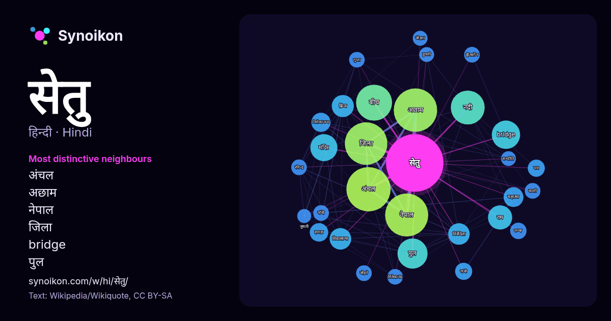

हिन्दी · आज के शब्दों की सूची
सेतु
“bridge” · विकिपीडिया, Wikiquote के 850 प्रयोगों में इसके आसपास मिले शब्द।

सबसे विशिष्ट पड़ोसी
- अंचल 74×
- अछाम 74×
- नेपाल 55×
- जिला 46×
- bridge 33×
- पुल 31×
- ब्रिज 20×
- निवेदिता 20×
- विद्यासागर 19×
- नदी 19×
- राम 16×
- विवेकानन्द 15×
- महात्मा 15×
- हावड़ा 15×
- बीच 11×
- लम्बा 11×
- रविन्द्र 11×
- ह्वीटस्टोन 11×
- विवेकानंद 11×
- गुप्ता 10×
× = सामान्य विकिपीडिया टेक्स्ट की तुलना में कितने गुना अधिक।
सबसे अधिक आने वाले पड़ोसी
- अंचल 80
- अछाम 77
- नेपाल 76
- जिला 74
- बीच 53
- नदी 47
- पुल 37
- bridge 33
- निर्माण 30
- मंदिर 30
- भारत 26
- कार्य 24
- राम 24
- नाम 22
- ब्रिज 20
- निवेदिता 19
- विद्यासागर 19
- प्रकार 18
- बना 17
- महात्मा 16
संदर्भ में
- के सेतु विश्व के सबसे लम्बे चाप-सेतुओं की सूची झूला पुल रवीन्द्र सेतु हावड़ा सेतु उपरिगामी सेतु मिलाऊ वायाडक्ट सेतु Bridges : पुलों के बारे में सर्वांगीण Wikipedia snippets · सेतु
- हुगली के दूसरे तट से जोड़ते हैं। विवेकानंद सेतू के अलावा अन्य पुल हैं: रविन्द्र सेतु निवेदिता सेतु विद्यासागर सेतु जुबली ब्रिज "Vivekananda Setu". wcities Wikipedia snippets · विवेकानन्द सेतु
- रवीन्द्र सेतु भारत के पश्चिम बंगाल में हुगली नदी के उपर बना एक "कैन्टीलीवर सेतु" है। यह हावड़ा को कोलकाता से जोड़ता है। इसका मूल नाम "नया हावड़ा पुल" था Wikipedia snippets · रवीन्द्र सेतु
- बाद में, महात्मा गांधी सेतु पर त्रिकोणीय स्टील ट्रस स्थापित करने के लिए गांधी सेतु पुनर्वास परियोजना शुरू की गई। महात्मा गांधी सेतु को अब नया रूप दिया जा Wikipedia snippets · महात्मा गाँधी सेतु
- विद्यासागर सेतु (प्रचलित नाम: दूसरा हावड़ा ब्रिज) हुगली नदी पर कोलकाता से हावड़ा को जोड़ता हुआ सेतु है। यह सेतु टोल ब्रिज है, किंतु साइकिलों के लिए निःशुल्क Wikipedia snippets · विद्यासागर सेतु
- गैर-विद्युत राशियों के मापन में ह्वीटस्टोन सेतु बहुत उपयोगी है। इसके लिए प्रायः यह संतुलन अवस्था के आसपास सेतु की किसी भुजा में छोटे परिवर्तन को मापने के Wikipedia snippets · व्हीटस्टोन सेतु
- भूपेन हजारिका सेतु या ढोला-सदिया सेतु भारत का सबसे लम्बा पुल है।जिसका उद्घाटन 26 मई 2017 को प्रधानमंत्री नरेन्द्र मोदी द्वारा कर दिया गया। यह 9.15 किलोमीटर Wikipedia snippets · भूपेन हाजरिका सेतु
- चिंगदाओ-हाइवान सेतु (मन्दारिन: 胶州湾大桥) पूर्वी चीन के शान्दोंग प्रान्त में स्थित एक सेतु है। यह सेतु जिआओझोउ खाड़ी से होकर गुजरता है और हुआंग्दो जिले, चिंगदाओ Wikipedia snippets · चिंगदाओ-हाइवान सेतु
और शब्द
- इतिहास
- ईश्वर
- कार्य
- कुत्ता
- गर्मी
- गाना
- घंटी
- घड़ी
- घोड़ा
- चाय
- चित्रकला
- छाया
- जंगल
- जलवायु
- जीवन
- तूफ़ान
- दर्पण
- द्वीप
- नक्षत्र
- नमक
- परिवार
- पहाड़
- पानी
- पैसा
- प्रकृति
- बगीचा
- बिल्ली
- भाषा
- भोजन
- माता
- मानचित्र
- मृत्यु
- मौन
- रेगिस्तान
- रेलगाड़ी
- रोटी
- वर्षा
- विज्ञान
- शक्ति
- शरद
- शहद
- शहर
- सड़क
- सत्य
- समय
- सर्दी
- स्वर्ण
- स्वास्थ्य
- हृदय
2026-10-09 को डिफ़ॉल्ट सेटिंग्स (±5 शब्द, मध्यम कॉर्पस) के साथ पहले से गणना की गई। इंटरैक्टिव मानचित्र इसे लाइव डेटा से ताज़ा कर सकता है।
मशीन-अनूदित इंटरफ़ेस; सुधारों का स्वागत है।